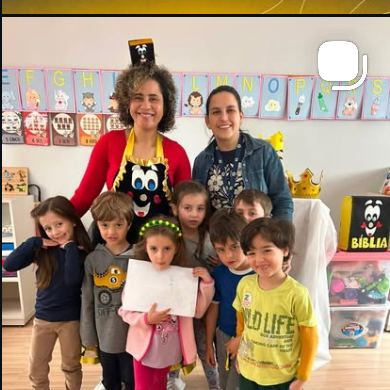
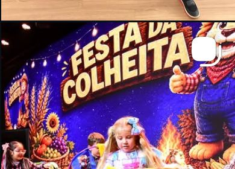
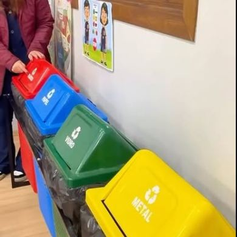
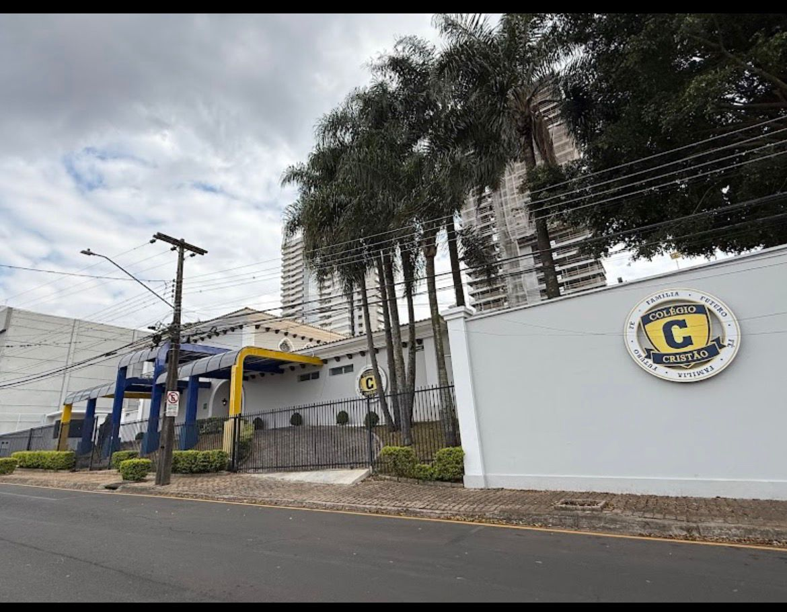

Forte no conhecimento,
firme nos valores
Escola cristã bilíngue na Vila Estrela. Turmas de cerca de 16 alunos, inglês todos os dias e uma formação que cuida do caráter tanto quanto do boletim.

Educação Infantil — aula de Formação CristãUma escola que nasceu de uma oração
O Colégio Cristão de Ponta Grossa é fruto da visão da pastora Tatiane Joslin, pós-graduada em Neurociência, Educação e Desenvolvimento Infantil e sócia-proprietária da rede. Foi ela quem trouxe para a cidade a proposta nascida em Porto Velho (RO): rigor acadêmico, ensino bilíngue e formação de caráter a partir de princípios bíblicos.
A unidade abriu as portas na Vila Estrela no primeiro semestre de 2025. Desde o primeiro dia, as turmas são enxutas de propósito — em média 16 alunos — para que cada criança seja conhecida pelo nome, acompanhada de perto e cuidada dentro e fora da sala de aula.
Dois anos depois, isso aparece no calendário: Feira do Empreendedorismo, Dad & Me Camp, Festa da Colheita, Show de Talentos, desfile cívico, medalha de ouro no judô. Escola é conteúdo, mas também é memória.
Educar não é apenas ensinar matérias. É desenvolver responsabilidade, fortalecer valores e formar cidadãos conscientes.
Quatro bases sustentam cada dia de aula
Antes de qualquer conteúdo, garantimos o essencial: um ambiente onde a criança se sente segura para aprender, errar e crescer.
Segurança física
Ambiente monitorado, acesso controlado e equipe treinada para cuidar de cada detalhe da rotina escolar.
Segurança emocional
Competências socioemocionais trabalhadas o ano todo: resiliência, empatia e capacidade de resolver problemas.
Qualidade de ensino
Metodologia atual, material didático rico e inglês incorporado à rotina — não como matéria isolada, mas como prática diária.
Princípios cristãos
Ética, honestidade, justiça e amor discutidos em sala, como parte da formação de caráter de cada aluno.
Uma jornada, uma etapa de cada vez
A unidade de Ponta Grossa nasceu para crescer junto com as famílias — e cresce a cada ano com os alunos que já estão aqui.
Educação Infantil
Espaço planejado para o brincar, o movimento e as descobertas sensoriais. É onde começa o inglês, a rotina de leitura e os primeiros projetos — do Dia da Tinta ao Museu da Bíblia.
Ensino Fundamental I
Alfabetização sólida, hábitos de estudo e autonomia. Turmas em torno de 16 alunos permitem acompanhar de perto o desenvolvimento acadêmico e socioemocional de cada criança.
5º e 6º ano
Seu filho cresceu, e o Colégio Cristão cresceu com ele. A escola amplia os anos finais acompanhando a própria turma, sem que a família precise recomeçar em outro lugar.
NovoFundamental II e Ensino Médio
Seguem o ritmo de crescimento da Rede Colégio Cristão, já em operação em outras unidades do país.
Em expansãoO que acontece entre uma aula e outra
Projetos, festas e saídas pedagógicas que a família acompanha de perto — e que as crianças lembram muito tempo depois.


Momentos que já viraram tradição
Arraste para o lado e veja o que marcou o calendário da escola desde a abertura.
Feira do Empreendedorismo
A primeira edição foi um sucesso: criatividade, iniciativa e produtos criados pelos próprios alunos.
Dad & Me Camp
Acampamento de pais e filhos em comemoração ao Dia dos Pais, com atividades ao ar livre.
MOMents to Cherish
Homenagem às mães preparada com carinho pela escola, do convite à decoração.
Semana das Crianças
Show de Talentos, Dia da Fantasia, Dia do Cabelo Criativo e Dia da Tinta — uma semana inteira de memórias.
Judô — ouro
Alunos representando o Colégio Cristão no pódio dos campeonatos da cidade.
Desfile Cívico
A escola nas ruas de Ponta Grossa, com as famílias acompanhando das calçadas.
Visita ao MUBI
Saída pedagógica ao Museu da Bíblia, aprendendo história e curiosidades fora da sala.
Colônia de Férias
Programação especial para que as crianças aproveitem o recesso com segurança e diversão.
Projeto Minha Família
Famílias convidadas para a sala de aula em um projeto conduzido em inglês pelos alunos.
Educando com princípios e valores
Cada disciplina é uma oportunidade de formar caráter, não só de transmitir conteúdo.
Empreendedorismo
Desde cedo os alunos exploram ideias, calculam, apresentam e vendem o que criaram. A Feira do Empreendedorismo é o ponto alto do ano.
Educação financeira
Noções de valor, planejamento e responsabilidade trabalhadas de forma concreta, na idade em que os hábitos se formam.
Pensamento computacional
Lógica e raciocínio estruturado aplicados de forma prática ao longo do currículo, preparando para um mundo digital.
Uma proposta nacional, uma escola de bairro
Ponta Grossa é uma das unidades da rede nascida em Porto Velho (RO). Mesma proposta pedagógica, mesmo material, mesmos pilares — com a cara e o cuidado de uma escola que conhece cada família pelo nome.

Na Vila Estrela, a poucos minutos do centro
Um prédio pensado para acolher: acesso seguro, pátio coberto, quadra e salas planejadas para turmas pequenas.
Rua Prudente de Morais, 42 — Vila Estrela, Ponta Grossa/PR
Conheça a escola de perto
Nossa equipe apresenta o espaço, a proposta pedagógica e tira todas as suas dúvidas sobre matrícula. Sem compromisso.
Agendar visita no WhatsApp